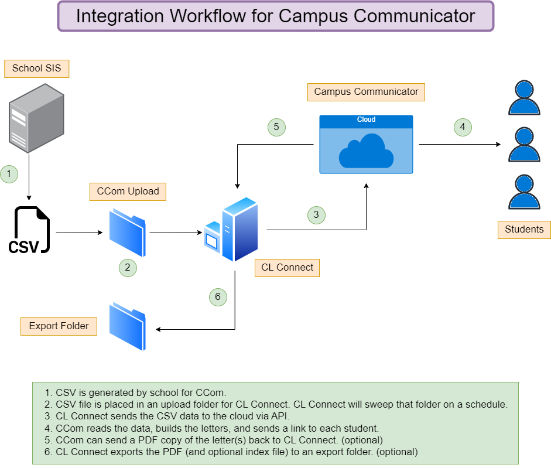
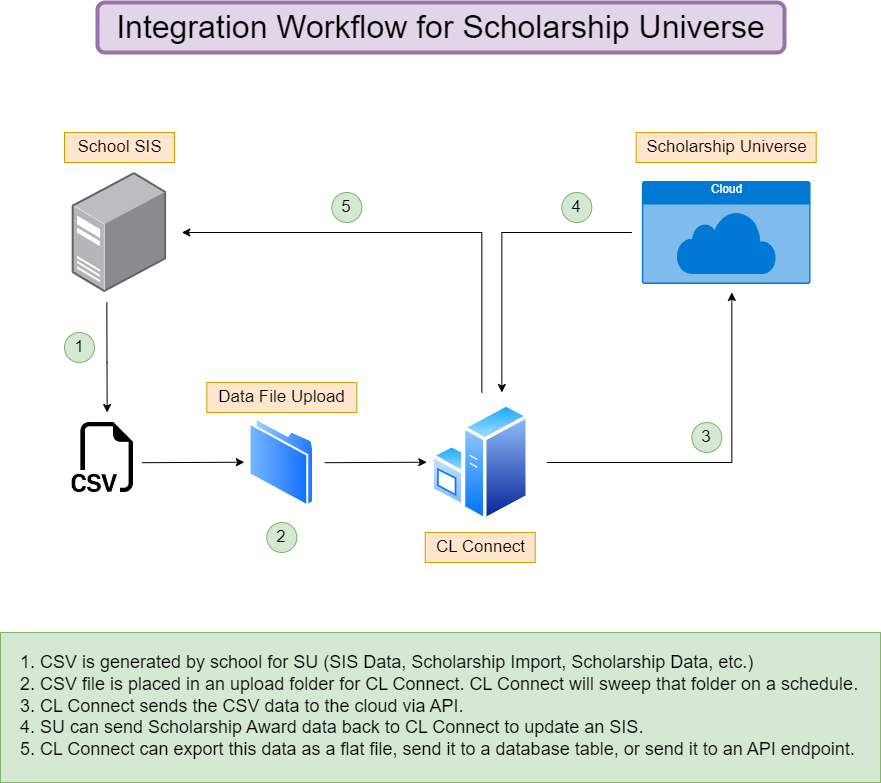
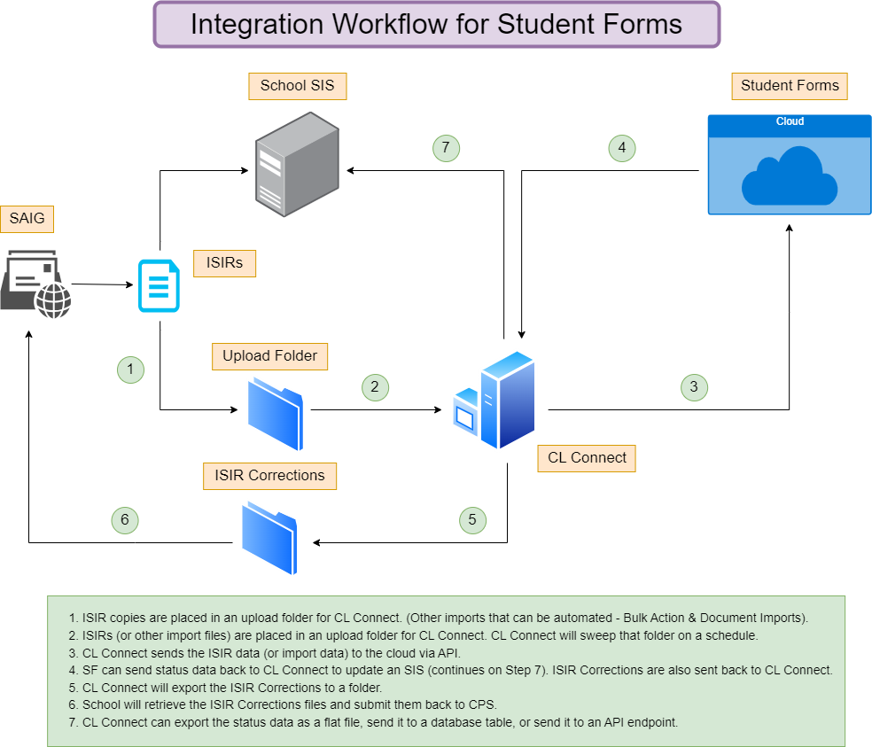
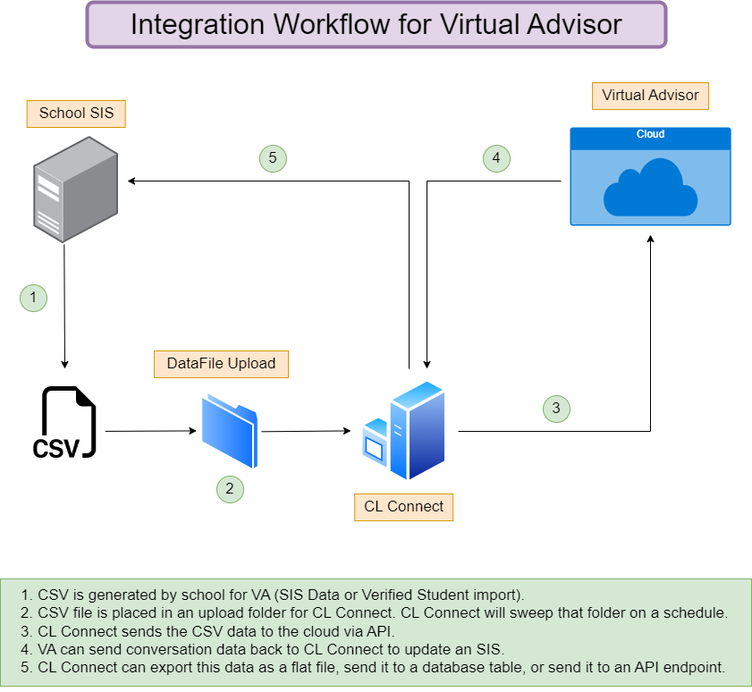

Student Financial Success Integration
Use Student Financial Success® Integration to manage operations and integrations with the Student Financial Success applications.
Release Notes
Release Notes-January 20, 2025
These release notes describe updates in Integration.
CLC-39: Documents sent in Platform Management were not making it to CL Connect
Some events were being overriden by callback properties. This issue has been resolved.
Release Notes-May 29, 2025
These release notes describe updates in Integration.
CLC-32: CL Connect App Pool stops
The CL Connect integration stopped working in some instances. This issue has been resolved.
Release Notes-February 26, 2024
These release notes describe new features, enhancements, and updates in Integration.
CLC-4: SMTP errors in CL Connect
Errors were displaying when setting up SMTP test communications. This issue has been resolved.
CL Connect Overview
Campus Communicator Overview
Learn about the integration workflow for Campus Communicator.
Workflow for Campus Communicator

Scholarship Universe Overview
Learn about the integration workflow for Scholarship Universe.
Workflow for Scholarship Universe

Student Forms Overview
Learn about the integration workflow for Student Forms.
Workflow for Student Forms

Virtual Advisor Overview
Learn about the integration workflow for Virtual Advisor.
Workflow for Virtual Advisor

Single Sign-On (SSO)
SSO Overview
Student Forms uses Identity Federation to support single sign-on (SSO) across disparate client systems. Supported protocols include WS-Federation, SAML 2.0 (passive authentication), and CAS.
Clients who want to implement SSO must provide the corresponding metadata of their Identity Provider (IdP) implementation. Metadata can be communicated using metadata service endpoints or URLs. Alternatively, metadata can be exchanged manually.
Implementation
Implementers must provide a student test account and a school user test account for each environment (production and non-production). These accounts are required by Student Financial Success for initial integration testing, maintenance, and support.
Implementers of WS-Federation or SAML 2.0 must provide the claims outlined within Claim Requirements. Implementers of CAS Server must provide CAS attributes outlined within CAS Extended Attributes.
Claim Requirements
Learn about the claim requirements for Single Sign On for all Student Financial Success products.
You can configure the claim names to whatever you prefer.
| Requirement | Description |
|---|---|
| Unique identifier | This value must be universally unique and not changed. The user name attribute is how students and staff are identified by Student Financial Success systems on login. Typically, this is the same value as the student ID/employee ID. If this value is not unique, or changes, it causes problems. There is no specific format requirement. The Unique Identifier does not need to be the same as the user name a person logs in with. |
| Student ID | The school or institution internal student identifier. This value is used for SIS and Imaging system integrations to identify students when communicating from Student Financial Success to the school. This value should be universally unique and unchanging. There is no specific format required for this identifier. |
| Given name | The given or first name of the user. |
| Surname | The surname or last name of the user. |
| E-Mail address | The e-mail address the student uses as the preferred e-mail address. A valid e-mail in the form of user@domain.com should be provided. |
CAS Extended Attributes
Learn about the CAS extended attributes.
Implementers of the CAS Server must provide the following extended attributes for all successful service validations.
| Attribute Key | Required/Optional | Description |
|---|---|---|
| nameidentifier | Required | This should be the user name used by the user in the portal. A unique value should be provided for each user, regardless of the user type. The user name does not have to be in any specific format. |
| givenname | Required | The given or first name of the user. |
| surname | Required | The surname or last name of the user. |
| studentid | Required | The school or institution internal student identifier, used in certain searches and when providing some types of output. Characters and numbers are valid up to a maximum length of 32. |
| Optional | The e-mail address the student uses as the preferred e-mail address. A valid e-mail in the form of user@domain.com should be provided. This claim is optional, and updates the student profiles. |
The attributes must be provided in the following format:
<cas:attributes>
<cas:{attribute key}>attr.value</cas:{attribute key}>
</cas:attributes>The following is an example of a service validation success response:
<cas:serviceResponse xmlns:cas='shibcamplogdev.cloudapp.net'> <cas:authenticationSuccess>
<cas:user>user_login_name</cas:user> <cas:attributes>
<cas:nameidentifier>johnsmith</cas:nameidentifier>
<cas:givenname>John</cas:givenname> <cas:surname>Smith</cas:surname>
<cas:studentid>123-456789-000</cas:studentid>
<cas:mail>johnsmith@maildomain.com</cas:mail>
</cas:attributes> </cas:authenticationSuccess></cas:serviceResponse>Best Practices
Learn how to keep your SSO account safe in shared locations.
- Set an appropriate timeout window within your Identity Provider (IDP).
NIST recommends reauthentication repeated every 12 hours and session termination of 30 minutes of inactivity. For intermittent reauthentication, that time shrinks to two minutes.
- Setup a logout URL in your Student Financial Success product.
Student Financial Success products are configurable to allow the setting of an SSO Logout Redirect URL.
To use this feature, the school must provide a URL within their IDP that destroys a session whenever a user navigates to it.
This logout redirection occurs within Student Financial Successes software logic. Which means that if a student or staff member closes all tabs with Student Financial Success software open, the logic does not run, and the logout redirection does not occur.
- Add a note or notification on your IDP log out page to instruct users to close the browser window.
- Shared computers on campus that do not require the user to log into the computer without using a domain account should be discouraged.
- Add a conspicuous sign to shared computers with a reminder to log out and close all browser windows.
- Educate your end users on how to use SSO on shared computers such as those in labs, public libraries, shared workstations in offices, or a computer borrowed from a friend with the following best practices:
- Always use a private browsing mode.
Private browsing modes are meant not to leave behind revealing information such as usernames, passwords, session cookies and other bits of personal information. Google Chrome, Mozilla Firefox and Internet Explorer all have private browsing modes.
- Do not check the Remember me check box on a shared device.
- Manually log out of any sites or services that you logged in to. Not all services use session cookies. Some use persistent cookies that remain even after a browser closes and opens.
Check with your IT team if your IDP uses persistent cookies to keep users logged in even after a browser has closed. Student Financial Success uses session cookies, that are automatically destroyed when the browser is closed.
- Check that you closed your browser. If you do not do this, the next person to use the computer could go to a website and be logged in as you.
- Always use a private browsing mode.
- Shut down the computer when you leave.
To download the attachment, click the Attachment  icon on this page. In the Attachment dialog box, select the item that you want to download, and click Download.
icon on this page. In the Attachment dialog box, select the item that you want to download, and click Download.
FAQs for SSO
Learn about frequently asked questions regarding SSO.
| Question | Answer |
|---|---|
| What federated identity solutions have you integrated with? | We can integrate with federated identity solutions that support WS-Federation or SAML 2.0. We have found that institutions that leverage open source technology in their enterprise use Shibboleth (2.0 or greater). Clients that are more Microsoft-centric, with existing investment in Windows Server 20NN, should find a more natural fit with Active Directory Federation Services (ADFS). |
| Can I use LDAP? | SSO integration with Student Financial Success requires a product that supports identity federation. LDAP is a feasible for internal SSO implementations but not for cross-domain, cross-company access. Use LDAP in conjunction with a federated identity solution such as Shibboleth (2.0 or greater) or ADFS. |
CL Connect Basic Setup
Minimum and Recommended System Requirements
CL Connect is a web application that facilitates integration of the Student Financial Success Platform with your internal systems.
The following are the recommended minimum specifications for a server or virtual machine for the application.
| Minimum Server Requirements | Recommended Server Requirements |
|---|---|
|
|
Windows Server IIS Install and Configuration
Learn how to install and configure the Internet Information Services (IIS) manager on a Windows Server 2019.
About this task
This procedure describes how to install and configure Windows Server version 2019. Follow the steps according to the Windows Server version available to you.
Procedure
What to do next
Download CL Connect Package
Learn how to download CL Connect.
About this task
Procedure
What to do next
Install SQL Server Express LocalDB
Learn how to install 2019 SQL Server Express LocalDB.
About this task
This procedure describes how to install version 2019 of SQL Server Express LocalDB, which is included in the CL Connect package.
Procedure
What to do next
Install .NET Framework
Learn how to install the .NET framework 4.8.
About this task
CL Connect has been tested on Windows Server 2012 and Windows 2019. Most Windows Servers 2012 and newer versions have .NET pre-installed. This topic is necessary if your .NET framework is an older .NET version than 4.8 or your OS is Windows Server 2012.
Procedure
Set full control file path permissions for IIS_IUSRS
Learn how to set full control permissions for IIS_IUSRS. CL Connect uses the default ApplicationPoolIdentity in IIS to do everything. This is the default user group.
Procedure
What to do next
IIS_IUSRS groups not listed
Learn how to set full control permissions for IIS_IUSRS groups that are not listed.
Procedure
Configure CL Connect – IIS Settings
Learn how to configure CL Connect to run on the local host.
About this task
Procedure
What to do next
Create Keep-Alive Scheduled Tasks
Learn how to create a task schedule to ping the CL Connect website to keep it from going idle.
Before you begin
Procedure
Configure Firewall Rules
Learn how to configure the firewall rules for CL Connect.
You must configure the firewall for the server to allow the API service to securely communicate with the newly created, public-facing instance of CL Connect. The IP addresses listed below need to be whitelisted with the ports used for the CL Connect communication.
recommends that you set the server's firewall rules to block all inbound public traffic and whitelist only the Inbound IP addresses provided below. This helps to minimize the public exposure of CL Connect and provides the highest level of security.
Port 443 is the default for HTTPS, but if other ports are used for additional instances of CL Connect, make those adjustments to the firewall rules.
Production
| Direction | Action | IP(s) | Port(s) |
|---|---|---|---|
| Inbound | Permit |
|
443 |
| Outbound | Permit |
|
443 |
Sandbox
| Direction | Action | IP(s) | Port(s) |
|---|---|---|---|
| Inbound | Permit |
|
443 |
| Outbound | Permit |
|
443 |
What is next
Go to Configure Incoming Communication to CL Connect.
Create and Identify Network Folders
Learn how to create folders that are required for several of the CL Connect integration touch points.
About this task
To enable the upload and archive functionality, two folders are required: an Upload folder where new files are placed for upload, and an Archive folder where the files are stored after they have been uploaded.
Additionally, if CL Connect is set up to receive event notifications for creating various types of files such as flat files, index files or document files, folders are also needed to store the output files.
This procedure describes how to create the necessary folder locations and grant permissions to CL Connect to access them.
Procedure
Platform Management - Setup API Credentials
Learn how to set up the API credentials for your school.
About this task
You must add the following outgoing and incoming API credentials for CL Connect to communicate with Cloud applications.
- API Credentials
Used for all outbound API requests made by CL Connect to Cloud applications.
- Application Settings
Used for all inbound API requests made by Cloud applications to CL Connect.
Procedure
Optional
Change the Identity User for CL Connect
Learn how to configure a custom network account for your Application Pool identity in IIS.
Procedure
Create Multiple Instances of CL Connect on the Same Server (Optional)
Learn how to create multiple instances of CL Connect on the same server.
Procedure
What to do next
- Configure the new CL Connect instance and set up the IIS bindings for https communication. See Windows Server IIS Install and Configuration.
- Add the new CL Connect instance to the Keep-Alive scheduled task. See Create Keep-Alive Scheduled Tasks.
Setup External Azure SQL Database with CL Connect
You can attach CL Connect LocalDB to an external Azure SQL database.
Procedure
-
Click on the link for either 3-Log Records or 4-Event Records to verify that there are no errors received.
To download the attachment, click the Attachment
icon on this page. In the Attachment dialog box, select the item that you want to download, and click Download.
Setup External SQL Database for CL Connect
You can attach CL Connect LocalDB to an external SQL server (version 13.0.4001).
Procedure
-
Click on the link for either 3-Log Records or 4-Event Records to verify that there are no errors received.
To download the attachment, click the Attachment
icon on this page. In the Attachment dialog box, select the item that you want to download, and click Download.
CL Connect Uploads and Imports
Export CL Connect Data
CL Connect versions 4.0.18 and above allows you to export CL Connect log files to a specified folder location for review.
About this task
Procedure
The following steps only need to be completed if you do not want to wait for the next Data File Upload job run and want the export data sent to the Platform Management Secure File Transfer immediately.
Results
Campus Communicator
Configure Campus Communicator Uploads
Learn how to configure CL Connect to upload award letters.
About this task
The automated upload process sets up a drop point, which is a directory, where files are placed by the school to be uploaded to any Student Financial Success product on a specified frequency. The school is responsible for placing the files in the directory configured in CL Connect.
When the data file has been successfully uploaded, the file is moved to another folder or directory location for archiving. This is done to keep a record of the uploaded files. The file name also gets an added time and date stamp to differentiate it from other archived files.
Procedure
-
In the Save Configurations page, click Save.
To download the attachment, click the Attachment
icon on this page. In the Attachment dialog box, select the item that you want to download, and click Download.
Campus Communicator Upload Testing
Learn how to test the Campus Communicator upload feature.
Before you begin
Check that the Upload feature is active, the upload file exists with the required fields and any additional fields you could need to include.
About this task
Testing in sandbox is one of the critical last steps in the setup to go live. This final approval pushes everything into your production environment where you can begin using the application to send the communication to your students. The overall purpose of testing in the sandbox environment is to:
- Check that your import file works.
- Validate the emails sent to the student.
- Validate the templates produced.
When setting up your test file, keep some of these best practice in mind:
- Check that your email address is the receiver for each student record. If you have additional email columns such as alternative email or parent email, either clear them or place an alternative email for yourself.
- Check that your phone number is the receiver if your import file contains a phone number field to send a SMS notification to the student. You can leave the field blank if you do not want to receive a SMS message.
- Limit the test to five to ten students.
- If you have multiple templates, check that there is at least one example of each.
- If you have sections or content that display for specific students, run an example where the section and content appears and another example where it does not appear.
Whether you are using CL Connect or manually importing the test file into your sandbox, review your files inside the application. For more information, see Import Files Page.
Procedure
Vertical File Specifications
A vertical (or stacked) file is the file format accepted by the application. In a vertical file, the data for each student has multiple lines, rows, or records.
In this format, each line, row, or record has information for only one cost or fund type, and the necessary information to identify the student. These files are easily created as comma delimited value (CSV) files.
There could be multiple rows for the same student, but each row breaks out a different fund type by term.
While additional fields can be added to the award letter template, there are fields required for each student.
| Required field | Description |
|---|---|
| STUDENTID | SIS student ID number For example, 111222333 |
| FIRSTNAME | Student's first name For example, Jane |
| LASTNAME | Student's last name For example, Doe |
| Student's email address and the primary address to send the award letter For example, jane.doe@cl.edu |
|
| TMPLATETYPE | Separates type of template created for the student, for example, new student, return students, and program specific students. For example, NEW |
| AWARDYEAR | Award year For example, 2024 |
| FUNDCOSTNAME | Name of Cost or Fund type, based on its code in your SIS, for example, your SIS can have the Federal Pell Grant appear as PELL. For example, Tuition, Housing, Transportation, Books, CLU Scholarship, AZ Grant, FWS, DL SUB STA, and DLUNSUBST |
| FUNDCOSTAMOUNT | Amount of the Cost or Fund type For example, 1200 |
| FUNCOSTTERM | Term of the Cost or Fund type For example, Fall |
| Optional fields | Description |
|---|---|
| FUNDCOSTSTATUS | Allows you to send additional details of each cost or fund type, such as the acceptance status or disbursement date. If you plan on adding more than one data point for each cost or fund item, you need to use a semi-colon separator between each data point. You must also ensure that you consistently use the same amount of semi-colons in the column, even if a particular data point is empty. |
| ALTEMAIL | Sends a copy of the original email to an alternative email address for the student. If using more than one alternative email address, you must append additional emails to the field, separated by a semicolon. |
| PHONENUMBER | Sends SMS text messages to students with a valid 10-digit or 11-digit phone number (domestic US phone numbers only). No SMS text messages are sent to international or not valid phone numbers. |
| Parent Email Address | Sends a copy of the letter to a parent email address. |
| FROM_EMAIL | Overrides the Email From setting (located on the page) with the email address in this field. |
| REIVSEDFLG | Bypasses the duplicate record check for a specific record when the duplicate record check feature is enabled. Having a value of null or 0 (zero) allows the application to know that it can bypass generating a new template if it finds a duplicate record, and a value of 1 forces the application to generate a new template for the student. You need to contact your Customer Success Manager to use the duplicate record check feature. |
| Question | Answer |
|---|---|
| Can I add additional columns to use? | Additional fields can be added to the file and named anything you want. Examples of additional fields include alternative emails, parent emails, and estimated balance. You need to contact your Customer Success Manager to determine in what context the field is used. |
| Do you have to use every column that we produce in the file? | No. We only use the relevant information pertaining to the award letter and shopping sheet. For example, if you have an extra column for the middle initial for the student and do not want to display it, it can be ignored. |
| What happens if I want to add new columns after going live? | You need to reach out to your Customer Success Manager before adding any new columns to your award letter import file. If you add columns to the import file and upload it into the system, the system ignores those columns. The new columns are not defined in the system and the system does not know if the new column is a cost, fund type, or miscellaneous field. Allow time to update the system for any new columns. |
| What else should I know about REVISEDFLG and its function? | The application can potentially stop a student record from generating a new template. For example, the case where a file can be uploaded twice or the student is brought into two separate files. This prevents the student from accidentally receiving another print and saves the institution the cost of that additional print. The application does not process any record where it finds the same combination of STUDENTID, AWARDYEAR, and TEMPLATETYPE has already been processed. If the record for the student is for a new award year or a different template type, the application know that it is new and processes the template. The optional REVISEDFLG on the import file overrides the application decision when a record with the same STUDENTID, AWARDYEAR and TEMPLATETYPE has already been processed and a reprint is needed. Having a value of null or 0 (zero) allows the application to bypass generating a new template if it finds a duplicate record and a value of 1 forces the application to generate a new template for the student. By default the functionality is disabled, all records are processed, and have a template generated whether a duplicate or not. |
Campus Communicator File Mapping Upload
The Campus Communicator File Mapping import allows an institution to use an import to maintain fund sources, items types, and cost of attendance items to keep Campus Communicator settings up to date with values present in Campus Communicator import files.
About this task
You can automate the import process through CL Connect.
Procedure
Results
The import file contains field values from your SIS that are displayed in your Campus Communicator template (e.g. Fund Sources, Budget items). For these items you can define acceptable values, how they should be displayed on the template, what section of the award letter where displayed and the order fields should be listed. Column headers must match exactly and be in the sequence below.
- RecordType (Required) - Items are mapped to either Award Letter, Print, Print Imaging, Shopping Sheet. Default use Award Letter
- TemplateType (Required) - Your template name. Use any template name that already exists in your environment as a default. Individual items only need to be imported one time under the default template
- SectionName (Required) - Enter the existing section name from the template.
- ItemFieldName (Required) - Value sent in the file (Fund Source/Item Type)
- ItemDisplayName (Required) - How the value will be displayed in the template (user friendly label)
- Item Description (Optional) - Use this field upload and/maintain help text for the item.
- SystemGroupName (Required) - System values used for reporting purposes. Values include:
- Direct Cost
- Indirect Cost
- Institutional Scholarship
- Institutional Payment Plan
- State Grant
- Federal Pell Grant
- Perkins Grant
- Other Grant
- Work Study
- Federal Subsidized Loans
- Federal Unsubsidized Loans
- Parent PLUS Loan
- Graduate PLUS Loan
- Non-Federal Private Educational Loan
- Military or National Service Benefits
- American Opportunity Tax Credit
- ShoppingSheetGroupName (Optional) - Used for Federal Shopping Sheet Template only. Manages which section of the shopping sheet to include the value. Group names include:
- Tuition and Fees
- Housing and meals
- Books and supplies
- Transportation
- Other educational costs
- Grants and scholarships from your school
- Federal Pell Grant
- Grants from your state
- Other scholarships you can use
- Work Study (Federal, state, or institutional)
- Federal Direct Subsidized Loan
- Federal Direct Unsubsidized Loan
- Family Contribution
- Federal Perkins Grant
- OrderId (Required) - Used for sorting values displayed. Use only positive who numbers. OrderId should be unique by section.
Manually upload a file through Campus Communicator
You can manually upload a file through Campus Communicator.
Procedure
Scholarship Universe
Configure Data File Uploads for SU
CL Connect provides the ability to configure automatic data file uploads for any Student Financial Success product.
About this task
The automated upload process sets up a drop point, which is a directory, where files are placed by the school to be uploaded to any Student Financial Success product on a specified frequency. The school is responsible for placing the files in the directory configured in CL Connect.
When the data file has been successfully uploaded, the file is moved to another folder or directory location for archiving. This is done to keep a record of the uploaded files. The file name also gets an added time and date stamp to differentiate it from other archived files.
The data file upload process uses sub-folders. The system requires that the sub-folder names must match the corresponding import process for which you want to upload the files. It is important to note that the letter case of the sub-folder names must match the required format. The name of the parent folder is not important and can be named anything you want.
For information about the network folders, see Create and Identify Network Folders.
| Import Process Name | Required Sub-Folder Name |
|---|---|
| Archive Student Answers | archive student answer |
| Scholarship Awards | scholarship award |
| Scholarship Data | scholarship |
| School SIS Data | sis |
| Verified Students Data | verified students |
You do not need to setup all sub-folders for this process to work. Only setup the folders related to the data you want automated.
The School SIS Data and Verified Students Data processes are identical in both the Virtual Advisor Student Forms and Scholarship Universe products. Therefore, if you have already set up the data processes for one product, you do not need to set up a separate process for the other product. The same process and mechanism can be used for both products. Additionally, CL Connect uses the same folder and process.
To learn more about the various Import Processes, see the following topics:
- Archive Student Answers Import
- Import Scholarship Awards
- Scholarship Data Import introduction
- Virtual Advisor data imports
- Use the Verified Student Data Import
Procedure
Student Forms
ISIR Processing
Configure ISIR Uploads
Learn how to configure CL Connect to upload Institutional Student Information Records (ISIR).
About this task
The automated ISIR upload process sets up a drop point, which is a directory, where the ISIR files are placed by the school to be uploaded to Student Forms on a specified frequency. The school is responsible for placing the files in the directory configured in CL Connect, which can be a local directory on the server or a network path (UNC).
When the ISIR file has been successfully uploaded to Student Forms, the file is moved to another folder or directory location for archiving. This is done to keep a record of the uploaded ISIR files. The file name also gets an added time and date stamp to differentiate it from other archived files.
Procedure
Example
The video overview includes information about uploading ISIR. You can find the transcription attached to this topic.
To download the attachment, click the Attachment icon on this page. In the Attachment dialog box, select the item that you want to download, and click Download.
Test ISIR Upload
Learn how to test the upload of Institutional Student Information Records (ISIR) to Student Forms.
Before you begin
Confirm the ISIR Upload integration has been configured with the appropriate folders and folder permissions. For more information, see Configure ISIR Uploads.
Procedure
What to do next
Use the video overview to learn more about testing for ISIR Upload, ISIR Corrections, and Imaging System Testing. You can find the transcription attached to this topic.
To download the attachment, click the Attachment icon on this page. In the Attachment dialog box, select the item that you want to download, and click Download.
Configure ISIR Corrections
Learn how to set up the ISIR corrections batch process.
Before you begin
About this task
The ISIR corrections batch process batches together all students in the Student Forms system who have been placed in the ISIR (Institutional Student Information Record) corrections queue.
One time per day, the ISIR corrections batch process creates a single text file per award year containing the necessary information for all the students in the queue. The text file is exported to a specific location that has been configured in CL Connect.
Procedure
What to do next
The video overview includes a walk-through for setting up ISIR corrections in CL Connect. You can find the transcription attached to this topic.
To download the attachment, click the Attachment icon on this page. In the Attachment dialog box, select the item that you want to download, and click Download.
Test ISIR Corrections
Learn how to test ISIR corrections. After the test is complete, the ISIR correction file appears in the ISIR correction folder that you created.
Before you begin
Procedure
TD Client Header and Footer
Troubleshoot ISIR upload and corrections errors
Learn how to troubleshoot common issues encountered in the ISIR upload process and ISIR corrections process.
Upload errors
| Error | Resolution |
|---|---|
| File permissions | Set permissions to allow IIS_IUSRS to have full control of the folder. |
| If you try to download the test file, you only get a partial download. | Add the website where the download file is located to your list of trusted sites and try again. |
| Could not connect (IP Address) | Firewall rules need to be whitelisted. |
| Resource currently in use | Close out any open Excel sheets, notepads, and file explorer windows. |
| ISIR padding error | For Colleague schools who have TDClient integrated within their SIS, check that the Enable ISIR padding option is selected in CL Connect. Go to . Under the Product Development section toggle the option, Enable ISIR Padding If The ISIR Lines Were Trimmed, to ON. |
Corrections errors
| Error | Resolution |
|---|---|
| Correction failed to process | Check that the federal school code (OPEID) is entered in Student Forms. |
| Correction failed | Check that the folders have the needed permissions (IIS_IUSRS). |
| Could not connect (IP Address) | Firewall rules need to be whitelisted. |
| No common algorithm found | The CL Connect API is using an outdated TLS setting. Update to the latest version of CL Connect. You can also check the cipher suite setting. |
| Compression failed | The file path for the sec file and exe contain spaces. Modify the file path name to have no spaces, for example: c:\tdclient3.2.2\security. |
| Not valid command line argument duplicate or not valid keyword corrections\filename | This TDClient error occurs when the ISIR Corrections folder has a space in the name. Remove the space and re-trigger the Corrections job on the CL Connect Recurring Jobs page. |
| IN FIPS MODE FATAL ERROR | This TDClient error occurs when executing the transfer command using CL Connect. The ISIR Corrections folder has a space in the name. Remove the spaces, update CL Connect, and try again. |
Bulk Action Imports
Read First - Bulk Action Imports Overview
Institutions can choose to import a file through CL Connect to Student Forms to generate a bulk action as an alternative to manually creating a bulk action.
You can use the Bulk Action Imports feature to automate the process of creating tasks for students based on their information stored in SIS or other systems. This can save time and effort for administrators who would otherwise have to manually create these tasks. This includes:
- Select students for verification
- Create SAP Appeal tasks
- Create Tasks for Custom Forms
The Bulk Action created through the import process follows the same workflow and applies the same settings as a manually created Bulk Action.
When the process completes, a notification is sent to the email address provided on the import file. The status of the process and any errors that occur can be monitored like any other bulk action.
Students who have not created an account do not receive a new task email or text communication of a new task. Any current communication from the institution should continue.
Configure Bulk Action for CL Connect
Learn how to configure bulk-action integration in CL Connect.
Before you begin
- Installed and set up CL Connect.
- Configured CL Connect with an SMTP endpoint. CL Connect can send notification emails when a bulk action fails to upload to Student Forms. SMTP setup is optional for Bulk Action but suggested for notifications if CL Connect is experiencing any errors with processing jobs. See Configure SMTP Alerts for instructions.
About this task
The bulk action import process requires a shared-file location on the network for the institution where files can be placed for the import. The following procedure describes how to configure CL Connect to monitor the shared-file location to pick up the file and push the file to the Student Forms API.
Procedure
File Layout for Bulk Actions
Learn about the file layout for bulk actions completed through CL Connect.
For the bulk action file layout using the Admin-Bulk Action, see Bulk request introduction and summary.
The bulk import process uses a CSV file with the following fields and requirements.
Field Descriptions
| Field | Description |
|---|---|
| ID | Used to identify students by Social Security Number or school Student ID. If Social Security Number is used as the identifier, the Use SSN flag must be set in the CL Connect configuration. |
| ACTION | Used to identify which action to take. Acceptable values in this field include:
|
| AWARDYEAR | Used to identify the awards years. For example, for award year 2017-2018, acceptable formats include: 2017-2018, 2018, 17-18, 8 |
| REASON | Required reason for action (250 character limit). |
| VGROUP | Request Verification Tracking Group. Use this field if the Action type is Verification. Acceptable formats include V1, V4, and V5. |
| TRACK | Tracking Group assigned to SAP Appeals, Special Circumstance - COA Appeal, and Emergency Fund Application appeals. Used to tag students by a term, period, cohort or other group identifier. This is required for Action Types SAP, COA, or EFA. This field is also required for Action Type ADDITIONAL if the transaction is SAP Appeal, Emergency Fund Application, or Special Circumstance - COA Appeal. |
| TRANSTYPE | Identifies which transaction to assign an additional information document.
The name must match the name used in Student Forms. |
| CREATETRANS | Determines whether to create the selected transaction if it has not been created by a school user or student. Acceptable values include Y or N. |
| DOCUMENT | Used to identify which document is requested for Verification or Other Documents transactions. If the import is selecting for Verification the V Group automatically drives the create of standard tasks.
|
Required fields based on action type
All fields are required in the file as their own column header, even if the file is built for a specific action that does not require all fields.
| Action Type | Field Required |
|---|---|
| Verification | Requires the field VGROUP. |
| SAP Appeal | Requires the field TRACK. |
| Additional | Requires the fields:
|
| Custom Transaction | Requires the field TRANSTYPE. |
To download the attachment, click the Attachment icon on this page. In the Attachment dialog box, select the item that you want to download, and click Download.
Configure SMTP Alerts
SMTP is the protocol that allows you to send and receive emails.
About this task
You can configure CL Connect to send emails to alert users of errors that occur with any integrations options. If the feature is turned on, it is active and functioning for every integration option that has been enabled.
Procedure
Document Imports
Document Imports Overview
The Document Import process imports student documents (images and PDFs) to the Student Forms application. The imported document is treated just like any other document upload and can be reviewed and acted upon in the same way.
When a document is imported into Student Forms, the student does not need to take any additional action. If a student receives a requirement to import that same document for any future purposes, the requirement is automatically completed for the student.
Index file
The document import process is an automated process that facilitates the upload of student documents. It requires a CSV file (index file) to provide instructions for the upload process. The index file can be in either TXT or CSV format and should be located in the same directory as the student documents that need to be uploaded.
Each document that needs to be uploaded is represented by one row in the index file. The index file contains metadata that provides information about each document, such as the document name, file type, and any other relevant information needed for the upload process. By using this metadata, the automated import process can accurately upload the student documents to the appropriate location.
There are four required columns per row.
| Field | Description |
|---|---|
| Student ID or Social Security Number | The ID of the student that the document belongs to. CL Connect can be configured to use a social security number as the ID. For more information, see Configure Document Imports. |
| Document Name | The document name indicates the type of document that is uploaded (for example, Tax Transcript). The name must be an exact match to a document type in the Student Forms application. You can use either the Student Forms name or you can create your own name in settings as described in Map Document Names in Student Forms. |
| File Name | The name of the physical file that is uploaded. The name must include the extension of the file. The following extensions are valid:
|
| Award Year | This field is optional (the data is optional but the header is required). Indicates the year that this document is for. If left blank, the document is considered a lifetime document and can satisfy a requirement in Student Forms for any year. Otherwise, the document satisfies a requirement that matches only the award year. The following formats are accepted, assuming an award year of 2024-2025:
|
Processing the files
When CL Connect is set up, the system is configured to automatically handle the process of uploading documents. All you need to do is place your files in the designated import path, and CL Connect handles the rest.
The automated process should complete after a certain amount of time, and when finished, the index file along with any successfully processed documents move to the archive folder.
However, if any documents fail to process, they are not moved, and information about the failure is stored in a CSV file that has the same format as the index file, but includes an additional column called Failure Reason, which indicates why the document failed to process. This failures file is in the archive folder with the same name as the index file, but with failures added as the file extension.
To import documents, each document that needs to be uploaded must have its own row in the CSV file. For example, if you have 100 students in your file, you need to upload 100 documents. However, these documents do not have to be the exact same ones that the students already submitted to your office. Instead, most schools create a "dummy" file that can be loaded into the system. This file serves as a placeholder and includes a general note for the user if they see the document in Student Forms.
For example, you can create a PDF file that says This document has already been collected by the Financial Aid office. Please contact us if you have any questions.
You can copy this PDF file the same number of times as the number of rows in your index file. This approach allows you to meet the requirement of having one document per row in the CSV file while also providing a helpful note to students who could see the document in Student Forms.
File size
The maximum file size that can be imported is 20 MB. However, if a document has multiple pages, it can exceed the 20 MB limit, if each page in the document is within the 20 MB limit.
Configure Document Imports
Learn how to configure the settings for importing student documents (images and PDFs) to the Student Forms application.
Procedure
Test Document Imports
Learn how to test the document import feature.
Before you begin
Check that the Import feature is active, the Import folder exists, and the IIS_IUSRS group has the required permissions to access and modify the contents of this folder.
Procedure
Virtual Advisor
Configure Data File Uploads
CL Connect provides the ability to configure automatic data file uploads for any Student Financial Success product.
About this task
The automated upload process sets up a drop point, which is a directory, where files are placed by the school to be uploaded to any Student Financial Success product on a specified frequency. The school is responsible for placing the files in the directory configured in CL Connect.
When the data file has been successfully uploaded, the file is moved to another folder or directory location for archiving. This is done to keep a record of the uploaded files. The file name also gets an added time and date stamp to differentiate it from other archived files.
The data file upload process uses sub-folders. The system requires that the sub-folder names must match the corresponding import process for which you want to upload the files. It is important to note that the letter case of the sub-folder names must match the required format. The name of the parent folder is not important and can be named anything you want.
| Import Process Name | Sub-folder Name |
|---|---|
| School SIS Data | sis |
| Verified Students Data | verified students |
You do not need to setup all sub-folders for this process to work. Only setup the folders related to the data you want automated.
The School SIS Data and Verified Students Data processes are identical in both the Virtual Advisor, Student Forms, and Scholarship Universe products. If you have already set up the data processes for one product, you do not need to set up a separate process for the other products. The same process and mechanism can be used for each product. CL Connect uses the same folder and process.
To learn more about the various Import Processes, see the following topics:
- School SIS Data Import introduction
- Use the Verified Student Data Import
Procedure
CL Connect Event Notifications
Configure Incoming Communication to CL Connect
Learn how to configure incoming communication from the CL Connect server for any configured event notifications.
Before you begin
- Check that your API service can communicate with the CL Connect server, through a public-facing DNS.
- Check that you installed an SSL certificate, signed by a valid CA, on the CL Connect server.
Procedure
Create API Credentials and Add the CL Connect Endpoint
Learn how to create API credentials and add the CL Connect endpoint URL to the Platform Management application.
Procedure
Event Notification Guide
Learn about every available Event Notification ID for Student Forms, Campus Communicator, Scholarship Universe, and Student Advisor.
For more information about each notification event, download the attachment that is attached to this topic.
To download the attachment, click the Attachment icon on this page. In the Attachment dialog box, select the item that you want to download, and click Download.
Event column description
| Name of column | Description |
|---|---|
| Event | This is the unique Event Notification ID number. |
| Event Name | The name of the event. |
| Event Notification Series | The type of event whether it is a transaction, user, or communication initiated. (see below) |
| Product | The Student Financial Success product the event is associated with. |
| How It Is Triggered | An explanation of the various scenarios that occur in the associated Student Financial Success product that triggers the event. |
| Property Name | The property name of the data values available with the event. This data is what is sent with the event through the integrations to CL Connect. |
| Display Name | The display name of the data values available with the event. These display names are what you see in CL Connect for these specific values. |
| Callback Exclusive | A Yes in this column indicates that a callback is needed by CL Connect to retrieve this data. This value is not part of the default JSON that gets sent when the event is first created. |
| Data Type | The data type of the value. |
| Example Data | An example of what the value looks like. |
| IsNullable | A Yes in this column indicates that this value can potentially be sent to CL Connect as NULL. |
| Can Be Empty String/Int | A Yes in this column indicates that the value can potentially be sent to CL Connect as an empty string or integer. |
Event notification series
| Event Series | Description |
|---|---|
| Events 101 -112 | Student Transaction Events - These events are specific to the different transactions (Verification, SAP, EFC, DO, Other Documents) in Student Forms. These events are created when an action occurs at the transaction level either by the system or a user. |
| Events 201 - 240 | User Activities Events - These events are created when a specific action is performed in the Student Forms application by a user. |
| Events 301 - 352 | Communication Events - These events are created when a communication is sent from the Student Forms application. Communications have to be enabled through Platform Management. |
| Events 401 – 407 | Document Events - These events are created when a specific action is taken on document in the Student Forms application. |
| Events 501 – 502 | Campus Communicator Events - These two events are created when letters are sent out to users through the Campus Communicator application. |
| Events 701 – 709 | Scholarship Universe Events - These events are created throughout the scholarship award process in the Scholarship Universe application. |
| Events 801 – 802 | Student Advisor Events - These events are created when an authenticated conversation begins and ends in the Virtual Advisor product. |
| 901 | Sponsored Scholar Events - This event is created during sponsorship posting. |
Subscribe to Events in Platform Management
Learn how to subscribe to events.
Procedure
What to do next
After subscribing to events in Platform Management, you must configure CL Connect to listen for these events and set up the desired outcome. Notice that each product's events all have the same output methods.
In some cases, Student Financial Success does have generic examples of how other institutions have handled this. Speak to a Customer Integration Consultant to see if there are examples for the specific product.
Student Financial Success Integration with CL Connect
Learn what it means to be integrated with Student Financial Success, and how to setup Student Financial Success products to capture events to send data to an institution-hosted server.
Student Financial Success products come with a built-in tool called Platform Management. This tool manages user accounts, roles, and other settings across all Student Financial Success applications. This Platform Management tool allows Student Financial Success products to be used as standalone applications.
However, there is another optional component called CL Connect that allows institutions to get more value out of Student Financial Success products.
CL Connect is an IIS website that is hosted by the institution. This IIS website is a configuration tool for setting up automation for processes, and a secure way to get data between Platform Management for the Student Financial Success products and the institution network and systems.
See Platform Management - Setup API Credentials for instructions on how to set up the secure communication between Platform Management and the IIS website and CL Connect.
Sending data
The automation that can be configured in CL Connect to securely send data to Platform Management includes but is not limited to:
- ISIR Files
- SIS Data Files
- Award Letter Files
- Bulk Action Files
- Document Imports
Receiving data
To receive information back to CL Connect, it does require a public-facing DNS using the HTTPS protocol, an SSL Certificate, and firewall rules enabled on the server. Getting data back from Platform Management to CL Connect is accomplished by what is known as Event Notifications.
Each Student Financial Success product has events associated with them that can be triggered based on actions that are done within the product. These events can be subscribed to in Platform Management to capture the event data when they happen. How to subscribe to events is shown below.
When the events are triggered, Platform Management sends the event notification to CL Connect. However, CL Connect still needs to be configured to listen for the same events that are subscribed to, which are later in this process.
Output solutions
The CL Connect output solutions include:
- Flat File (CSV or XML)
- Stored Procedure (DSN connection to SIS database)
- API (POST or PUT to a valid endpoint)
- Document Files (PDF and image files)
- Index Files (CSV or XML)
Output Methods
File Store
Event notifications - File Store (Flat File)
You can configure the Event Notifications in CL Connect for a File Store integration to produce a Flat File for the SIS to consume.
Procedure
What to do next
The video overview includes information about file store configuration. You can find the transcription attached to this topic.
To download the attachment, click the Attachment icon on this page. In the Attachment dialog box, select the item that you want to download, and click Download.
File Definitions
This is an outline for creating a flat file for the File Store (SIS) integration and an index file for the Documents or Campus Communicator integration related to the Event Notifications that are configured in CL Connect.
Procedure
Flat Files Test
You can manually trigger flat file creation.
About this task
Procedure
Stored Procedure
Install ODBC Drivers and Create a DSN
Learn how to install ODBC drivers and create a DSN for the stored procedure integration process. Install the Oracle-specific driver that your database uses before following these instructions.
Procedure
What to do next
Configure Stored Procedure Integration
Learn how to configure the stored procedure integration.
Before you begin
Procedure
API
Configure API Integration
Learn how to call an external API through CL Connect, using event notification data as parameters.
Procedure
Campus Communicator
Configure Batch Processing
Learn how to setup batch processing integration in CL Connect for Campus Communicator.
About this task
The CL Connect output creates a single PDF for each financial aid notification record loaded into the Campus Communicator environment. When records are imported into Campus Communicator for creation, this service tracks those files for processing. When the service runs, a single file is created for each record, until all records have been accounted for.
Procedure
Configure Campus Communicator Print
Learn how to setup Campus Communicator Print integration in CL Connect.
About this task
This procedure creates a configuration with a higher-quality PDF file of the PRINT template type. This configuration does not allow an index file to be generated with the PDF.
Procedure
Map Campus Communicator Template to Events
You can map an event number to a record type for integration purposes within Campus Communicator.
About this task
Procedure
- Navigate to Campus Communicator.
- Select Settings.
- Select the Events tile.
- Click + ADD.
- Select the necessary Record Type and Event Id.
- Click Save.
Results
Student Forms
PowerFAIDS-Event notifications
You can configure CL Connect to produce an XML file for PowerFAIDS to consume to update student activity.
Procedure
Example
To download the attachment, click the Attachment icon on this page. In the Attachment dialog box, select the item that you want to download, and click Download.
PowerFAIDS-Import an XML file
You can import an XML file that you might receive from CL Connect into PowerFAIDS using the External Update process.
Procedure
Document Imaging
Configure Document Imaging
Learn how to set up document event notifications in CL Connect.
Before you begin
- Check that the API communication between Platform Management and the CL Connect server is properly working.
- Check that you set up your Document_Imaging folder. See Create and Identify Network Folders for instructions.
About this task
This procedure configures CL Connect to listen for the events that are subscribed to in Platform Management.
Procedure
What to do next
Map Document Names in Student Forms
Document names are used for Event Notifications to provide the output data from CL Connect in the format that is wanted for the SIS or Document Imaging software. This procedure involves assigning appropriate names and mapping the data fields from CL Connect to the corresponding fields in the target software.
Procedure
Virtual Advisor
Virtual Advisor Events
Student Advisor has the capability to trigger and send event notifications in JSON data format.
These event notifications are sent to an institution's endpoint URL, which is pre-defined. Like other Student Financial Success products, institutions can manage the events they want to receive notifications for in Platform Management and CL Connect.
Student Advisor sends events related to conversations that take place in Virtual Advisor with authenticated students. It is important to note that these events do not include any conversation where the user is anonymous, as there is no identifier to track whether the user is a student or an outside user.
The following table lists each event, how it is triggered, and the data that is included in the initial message and API callback message.
| Event | Description |
|---|---|
| 801 - Authenticated Conversation Started | This event is triggered when an authenticated student starts a conversation. This can occur when the student logs into Student Forms or Scholarship Universe and initiates a conversation or when the student authenticates during the conversation. Authentication can be requested by an advisor or by Virtual Advisor to provide specific student data. This event captures the start of the conversation regardless of where it is initiated from and how the authentication takes place. The initial event notification contains the following data: The event does not trigger an API callback for the |
| 802 - Authenticated Conversation Ended | This event is triggered when a conversation with an authenticated student has ended. The event can occur in one of two ways:
In either case, this event captures the end of the conversation with the authenticated student. The initial event notification contains the following data: The API callback for the getConversation JSON includes the following data: |
Other Operations
Upgrade CL Connect
Learn how to upgrade your instance of CL Connect.
Step 1: Stop CL Connect
You must stop your current instance of CL Connect before you can upgrade it to a newer version.
Procedure
Step 2: Rename Existing CL Connect Directory
Procedure
Step 3: Download CL Connect
Procedure
Step 4: Set up NET framework and install SQL Express
You have to complete the steps in this section one time when upgrading CLConnect from a previous version to 4.0.1. If you have done this, skip to the Step 5.
Procedure
Step 5: Start CL Connect
Verify that your settings and data have been retained by launching CL Connect.
Procedure
Troubleshooting guide
This Troubleshooting guide includes common integration issues, errors, applicable troubleshooting steps, and applicable documentation links. The information is broken down into specific integrations for Basic Setup, ISIR Upload, ISIR Corrections, Incoming API Credentials, Document Imaging, Stored Procedure, and API.
Basic Setup
| Error/Issue | Action and Documentation |
|---|---|
| Blank CL Connect Home Page: You may see a gray page with the Home button visible in the top right. However, nothing else loads. | This error can happen when using Internet Explorer:
This issue can happen due to a Custom HTTP Response Header. X-Content-Type-Options: nonsniff needs to be removed if in place:
Documentation: Configure CL Connect – IIS Settings |
| Error Description: Database CampusLogic cannot be upgraded because it is read-only, has read-only files... | File Path Permissions Error:
Documentation: Set full control file path permissions for IIS_IUSRS |
| Error Description: [SqlException (0x80131904): The INSERT permission was denied on the object 'Log', database 'database name', schema 'schema name'.] | This error is specific to external database users and indicates insufficient permissions for CL Connect to be able to insert a new table to the database:
Note: For SQL 2016:
Documentation: New Schema Script_SQL2019: See the attachments New Schema Script_SQL2016: See the attachments To download the attachment, click the Attachment |
| Virtual Driver Error | This error indicates that a virtual drive needs to be created. Create a virtual drive in IIS. |
| Error Description: [SqlException (0x80131904): A network-related or instance-specific error occurred while establishing a connection to SQL Server. The server was not found or was not accessible. | This error indicates that the database for CL Connect is unreachable: Navigate to the web.config file and determine if the database for CL Connect is pointing locally or externally:
Documentation: Install SQL Server Express LocalDBSetup External SQL Database for CL Connect Setup External Azure SQL Database with CL Connect |
| Error Description: Failed to map the path /. | This error is caused due to the site name being updated in IIS after the site is created. Two possible solutions:
|
| Setup CL Connect page unaccessible: You will be able to access the Processing Queues, Log Records, and Event Records. CL Connect Log Records ERROR: An error occurred while sending the request. The underlying connection was closed: An unexpected error occurred on a send. An existing connection was forcibly closed by the remote host. |
This error is due to our communication being blocked:
Note: There are different IP addresses for sandbox and production traffic.
Documentation: Configure Firewall Rules |
ISIR Upload
| Error/Issue | Action and Documentation |
|---|---|
| CL Connect Log Records ERROR: File Permissions error | This error indicates insufficient file permissions: ensure IIS_IUSRS user has Full Control permissions of the upload and archive folders associated with this integration. Documentation: Set full control file path permissions for IIS_IUSRS |
| CL Connect Log Records ERROR: Could not connect 138.91****** | This error occurs when communication is blocked: ensure communication is allowed from our IP addresses. Note: There are different IP addresses for sandbox and production traffic.
Documentation: Configure Firewall Rules |
| CL Connect Log Records ERROR: Resource currently in use | This error occurs when the upload file is open: ensure all excel sheets, notepads, file explorer windows, etc. are closed. Documentation: Test ISIR Upload |
| Student Forms > ISIRs > ISIR Imports > Status: Invalid File | This status can happen when Colleague schools have TDClient integrated and the ISIR Padding setting within Student Forms has not been enabled:
This status can also happen if you upload a blank or test file and that is expected. Documentation: Test ISIR Upload |
ISIR Corrections
| Error/Issue | Action and Documentation |
|---|---|
CL Connect Log Records ERRORs:
|
These errors indicate a missing federal school code within Student Forms. Reach out to your Customer Integration Consultant or Customer Implementation Consultant to add the missing school code. |
CL Connect Log Records ERRORs:
|
These errors indicate insufficient file permissions: ensure IIS_IUSRS user has Full Control permissions of the applicable ISIR Corrections folder(s) associated with this integration. Documentation: Set full control file path permissions for IIS_IUSRS |
| CL Connect Log Records ERROR: Could not connect 138.91****** |
This error occurs when communication is blocked: ensure communication is allowed from our IP addresses. Note: There are different IP addresses for sandbox and production traffic.
Documentation: Configure Firewall Rules |
| CL Connect Log Records ERROR: No common algorithm found- |
This error indicates that our API is using outdated TLS settings:
Documentation: Upgrade CL Connect |
| CL Connect Log Records ERROR: 103 CMP0103 *** IN FIPS MODE *** FATAL ERROR: invalid command-line argument. |
These errors indicate a space in the SEC file or EXE file paths. Move these files to a location with no spaces. Note: This error is specific to TDClient integration users.
Documentation: Configure ISIR Corrections |
CL Connect Log Records ERRORs: TDClient
|
These errors indicate the ISIR Corrections folder has a space in the name: remove the space in the folder name. Documentation: Create and Identify Network Folders CL Connect - Trigger Jobs Manually |
Incoming API Credentials
| Error/Issue | Action and Documentation |
|---|---|
| Platform Management ERROR: A connection attempt failed because the connected party did not properly respond after a period of time, or establish connection failed because connected host has failed to respond. |
This error indicates a setup issue, most commonly fixed using the following solutions:
Documentation: Configure Incoming Communication to CL Connect Configure Firewall Rules Create API Credentials and Add the CL Connect Endpoint |
Platform Management ERRORs:
|
These errors indicate the SSL certificate is not valid: confirm the SSL certificate for CL Connect is valid and unexpired. Documentation: Configure Incoming Communication to CL Connect |
| Platform Management ERROR: Unauthorized- | This error occurs when there is a credential mismatch between CL Connect and Platform Management:
Documentation: Create API Credentials and Add the CL Connect Endpoint |
Platform Management ERRORs:
|
These errors occur when the DNS cannot be found:
Documentation: Create API Credentials and Add the CL Connect Endpoint |
| Platform Management ERROR: No connection could be made because the target machine actively refused it. ---> |
This error is due to our communication being blocked: ensure communication is allowed from our IP addresses. Note: There are different IP addresses for sandbox and production traffic.
Documentation: Configure Firewall Rules |
| Platform Management ERROR: The page cannot be displayed because an internal server error has occurred. | This error indicates a setup issue, most commonly with the following solutions:
Documentation: Configure Incoming Communication to CL Connect Configure Firewall Rules Create API Credentials and Add the CL Connect Endpoint |
| Platform Management ERROR: The resource you are looking for (or one of its dependencies) could have been removed, had its name changed, or is temporarily unavailable. ...;Please review the following URL and make sure that it is spelled correctly. | This error indicates the IIS Bindings are not valid:
Documentation: Configure Incoming Communication to CL Connect |
| Platform Management ERROR: BadGateway - | This error happens when the server cannot be found:
Documentation: Create API Credentials and Add the CL Connect Endpoint |
| Platform Management ERROR: ExpectationFailed- | This error happens when the database utilized for CL Connect is too full: External Database: ensure internally that it is purged or additional space is added. Local SQL Database:
The data purge settings can be adjusted through CL Connect to ensure this does not happen again. Documentation: GitHub - campuslogic/CL-Connect Set full control file path permissions for IIS_IUSRS SQL Server Express Data Purge Settings |
Document Imaging
| Error/Issue | Action and Documentation |
|---|---|
| CL Connect Log Records ERROR: Object not set to a reference. | This error happens when an image file comes through but an index file is not created:
Documentation: Configure Document Imaging File Definitions |
| CL Connect Log Records ERROR: Hexadecimal error... | Generally, this error happens when XML is selected as the index file format and there are spaces in the field names. Review the index file specifications and ensure there are no spaces. Documentation: File Definitions |
| CL Connect Log Records ERROR: The read option failed. | This error occurs when a document within Student Forms was uploaded, accepted but then later waived. As the document is now waived, you can delete this failed event from CL Connect:
|
| Xtender ERROR: Invalid file length. | This error indicates there are spaces either within the file name or a value:
Documentation: File Definitions Map Document Names in Student Forms |
Stored Procedures
| Error/Issue | Action and Documentation |
|---|---|
| CL Connect Log Records ERROR: There was an error executing the stored procedure... | These types of errors generally indicate insufficient user permissions within the database:
Documentation: Install ODBC Drivers and Create a DSN |
| CL Connect Log Records ERROR: Arithmetic error... | This error indicates the driver version is below 12: confirm driver version is 12. |
| CL Connect Log Records ERROR: Arithmetic mismatch... | This error indicates a driver to database specs mismatch:confirm the correct driver is downloaded to match the database specifications (32-bit OR 64-bit). After confirming the driver size match change the following settings to the opposite of the current setting: Enable 32-Bit Applications setting found within IIS:
|
| CL Connect Log Records ERROR: TNS could not resolve the connect identifier specified... | Possible solutions include:
Documentation:Install ODBC Drivers and Create a DSN |
| CL Connect Log Records ERROR: ORA-####... | These types of errors indicate an issue on the database side, generally mismatch:
Documentation: Configure Stored Procedure Integration |
| Banner zsuelog_table ERROR: ORA-01403: no data found | This is a common error with Scholarship Universe and Banner users. Below is common code to use and the revision to the following section of the stored procedure may be needed depending on the term name specified within Scholarship Universe: Get the aid year code and term code from the term name value sent from Scholarship Universe: where OPTION 1: applicable for numeric term names (for example, 202260): where upper(stvterm_code) = upper(p_suTermName); OPTION 2: applicable for alphanumeric term names (for example, Fall 2023): where stvterm_code = p_suTermName; |
| Scholarship Universe COMMON ISSUE: Only one term is posting For example, a student is awarded for a Fall and Winter term. However, only the Fall term posts successfully. |
This issue is due to CL Connect running multiple jobs at a time and data getting missed. The resolution is to update the Worker Count within CL Connect to 1:
Note: This is specific to Scholarship Universe and Banner stored procedure.
Documentation: Configure Stored Procedure Integration |
| CL Connect Log Records ERROR: Failed to convert parameter value from String to Int32... | This error occurs when the data type of a parameter within CL Connect has been specified as int when it should be varchar: Navigate to the CL Connect Stored Procedure section and confirm all parameter data types. Documentation: Configure Stored Procedure Integration |
| CL Connect Log Records ERROR: Optional Feature Not Implemented | This error is caused due to a transaction being created on a student's account before the student ID is added:
|
APIs
| Error/Issue | Action and Documentation |
|---|---|
| Invalid Response Error | This error indicates that the token or URL is not valid.
|
Resend Events from Platform Management
Learn how to replay Events from Platform Management.
Procedure
Add Student ID Column in Event Log in Platform Management
Learn how to add a Student ID column in the event log.
Procedure
CL Connect - Trigger Jobs Manually
Learn how to trigger jobs manually.
About this task
As a job is processed, it advances through various stages: Enqueued, Scheduled, and Processing. You can visit each of these stages to see which jobs fall into that particular category.
Procedure
Test API Endpoint Connection
Learn how to test your API endpoint connection from the cloud infrastructure to your hosted instance of CL Connect.
About this task
The endpoint test validates the following:
- That a proper SSL Certificate is installed and assigned to CL Connect.
- The correct ports and IP addresses have been white-listed.
- The DNS you are using as an endpoint is valid.
Procedure
SQL Server Express Data Purge Settings
The SQL Server Express database that comes with the CL Connect installation files has a 10 GB limit. The limit size cannot be increased but the amount of data that is purged from this database automatically by the application can be configured in CL Connect.
About this task
By default, CL Connect purges rows older than 30 days. You can adjust this setting under the Application Settings.
Procedure
FAQs
Learn about frequently asked questions regarding Integration.
| Question | Answer |
|---|---|
| Why can't I access CL Connect from outside the server? I click the web page and nothing happens. | The ability to configure CL Connect from outside of the server is disabled. You can access what looks like the Home Page, however, none of the links work. You must access the server locally to set up the configurations. |
| What do I enter as the Endpoint URL in Platform Management? | Enter the public DNS that you have associated with your web instance of CL Connect, appended with /api/NotificationEvent. For example, https://clconnect.tbd.edu/api/notificationevent |
| Does Student Financial Success's API Service Retry Failed Events? What about CL Connect? | The Student Financial Success® API service, and CL Connect, retry any events that do not reach their final destination and throw an error message. For Student Financial Success's API service, if the initial event is fired and does not reach the instance of CL Connect for the school, the event retries every 360 minutes over a 48 hour period until successful. If all six attempts fail, the API service no longer fires the event. The school needs to log in to their platform and manually resend the event through the Platform Manager panel. For CL Connect, the event retries in the local instance of Hangfire a total of ten times over a period of seven hours and twenty-two minutes. Each time an event is retried there is a longer delay before the next event is sent. For example, on attempt 1, the total delay could be 00:00:48 seconds, on attempt 5, the total delay could 00:22:54 seconds, and on attempt 10, the total delay could be 07:22:03 seconds. If all ten attempts fail, the event moves to a Failed Queue in Hangfire. The failed event can be manually replayed anytime by the school through the Hangfire local service. |
| How do you to test connectivity to the Campus Communicator platform? | You can use the PowerShell scripts on the CL Connect server to test connectivity to the Campus Communicator platform. CL Connect does this when the API credentials are entered in the UI and the Test button is clicked. |
| Delayed event notifications | When actions happen that would trigger an event, those first become a background job to get processed. If there are a lot of events to process (across everyone) then it is possible that there could be delays. Additionally, there are background retries or failures that we cannot see on the front end, but this could cause delays, as well. |
To download the attachment, click the Attachment icon on this page. In the Attachment dialog box, select the item that you want to download, and click Download.
API Integrations - No CL Connect
Student Financial Success Services Authentication
Student Financial Success Services are secured using OAuth2. Before invoking Student Financial Success services, clients must first request a security token from the STS (secure token service). A user name and password are required.
Every request must contain a valid security token issued by the Student Financial Success STS.
- Consumer requests a security token from Student Financial Success STS using credentials provided by Student Financial Success.
- Student Financial Success authenticates the credentials and issues a security token with that is set to expire after a set period (15 minutes).
- Consumer uses the security token to invoke Student Financial Success Web Services.
- The Student Financial Success Web Service response is received by Consumer.
Student Financial Success STS
| Environment | Endpoint |
|---|---|
| Development | https://sandboxgateway.campuslogic.com/oath2 |
| Production | https://gateway.campuslogic.com/oath2 |
Request
- The OATH2 Username and Password must be created through the environment for the client (https://{ClientHostName}-pm.campuslogic.com).
- Log into the environment for the client through Platform Management.
- Select Integration on the left menu and click the Credentials Management tile.
- Click on the Add+ button if there are none or only one other set of credentials present.Note: Credentials Management has a limit of two credentials.
| Request | |
|---|---|
| Request Body | client_id = the API username client_secret = the API password scope= the target application's API Root URL (for example, https://api.studentforms.com/) |
| Student Financial Success API Root URLs | |
|---|---|
| Student Forms - Dev | https://apisandbox.studentforms.com |
| Student Forms - Prod | https://api.studentforms.com |
| Campus Communicator - Dev | https://apisandbox.campuscommunicator.com |
| Campus Communicator - Prod | https://api.campuscommunicator.com |
| Scholarship Universe - Dev | https://apisandbox.scholarshipuniverse.com |
| Scholarship Universe - Prod | https://api.scholarshipuniverse.com |
The return results are a JSON as follows:
{
"access_token": tokenValue,
"token_type": "Bearer",
"expires_in": 900 (seconds, all tokens are 15m duration)
}
To download the attachment, click the Attachment icon on this page. In the Attachment dialog box, select the item that you want to download, and click Download.
Student Financial Success Service Operations Upload
Upload ISIR File
Learn about the Upload ISIR File operations supported by Student Financial Success.
This operation accepts an ISIR file in the body of the request. After it is uploaded, the ISIR file is queued for processing. The response provides an ISIR File Id value that uniquely identifies the uploaded file.
| API Root URL | |
|---|---|
| Dev | https://apisandbox.studentforms.com |
| Prod | https://api.studentforms.com |
| Request | |
|---|---|
| Request Format | [API Root Url]/isir |
| Request Method | POST |
| Request Header | Authorization: Bearer {token} |
| Content-Type | "application/actet-stream" or "multipart/form-data" |
| Successful Response | |
|---|---|
| HTTP Status Code | 202 |
Upload SU Data Files
Learn about the Upload SU Data Files operations supported by Student Financial Success.
This operation accepts a CSV file in the body of the request. After it is uploaded, the CSV file is queued for processing.
There are currently five data files accepted for Scholarship Universe. See Configure Data File Uploads for SU. SU uploads are done through Platform Manager.
| API Root URL | |
|---|---|
| Dev | https://apisandbox-pm.campuslogic.com |
| Prod | https://api-pm.campuslogic.com |
| Request | |
|---|---|
| Request Format |
[API Root Url]/api/datafiles/sis [API Root Url]/api/datafiles/scholarship [API Root Url]/api/datafiles/scholarship award [API Root Url]/api/datafiles/verified students [API Root Url]/api/datafile/archive student answer |
| Request Method | POST |
| Request Header | Authorization: Bearer {token} |
| Successful Response | |
|---|---|
| HTTP Status Code | 202 |
Upload Campus Communicator File API
You can use the API to send in your award letter files.
This operation accepts Campus Communicator data in the body of the request. The file is streamed over to the API service. After it uploads, the Campus Communicator file is processed and Student Financial Success returns a 200 message back.
| API Root URL | |
|---|---|
| Dev | https://apisandbox.campuscommunicator.com |
| Prod | https://api.campuscommunicator.com |
| Request | |
|---|---|
| Request Format | [API Root URL}/files |
| Request Method | POST |
| Request Header | Authorization: Bearer {token} |
| Content-Type | Must start with "multipart/" |
| Successful Response | |
|---|---|
| HTTP Status Code | 202 |
Overview of Event Notifications
Event notifications are events that occur in the Student Financial Success system that trigger pre-defined notifications to be sent using a HTTP post to an endpoint URL defined by the client that can receive JSON data.
The notification is sent in near real-time to the endpoint. The client receives the events and performs internal processes based on the notification.
Settings for the event notifications can be set by administrator users from the School Settings page on the Event Notification tab. The Event Notifications page allows you to set information concerning enabling notifications, endpoint URL, optional username, and password information. You can also make your subscription selections to certain events from this page.
Setup
The client provides a URL that can accept the HTTP post of JSON data. This can be in the form of either HTTP or HTTPS.
The client can optionally provide credentials in the form of username and password which is sent with each request in the header information.
The client chooses which event notifications they would like to subscribe to from the available pre-defined events. Based on these selections, Student Financial Success begins sending posts to the endpoint when any of the subscribed events occur.
HTTP Post Information
You receive a HTTP Post containing a JSON array of multiple events in one request after a very short delay.
These posts are sent to the URL you have defined in the endpoint URL setting. The array can contain events of similar or different types. Events that occur within a set period of time generally between 5 – 30 seconds are combined. The maximum number of events placed into a single POST is 32.
Post Header Information
The following is an example of header information sent in the post where the username and password were provided by the client:
Error rendering macro panel : com.atlassian.renderer.v2.macro.basic.validator.MacroParameterValidationException: Border style is not a valid CSS2 border-style value
When username and password are provided by the client, basic authorization is implemented using a Base64 encoding scheme. When the username and password information is not provided the Authorization header is not present.
Post Body Information
The following is an example JSON body sent in the post:
[
{
"Id": "832fa69d-8d33-405d-8016-3f8fac6e2bac",
"EventNotificationId": "105",
"EventNotificationName": "Transaction Completed",
"Description": "Transaction entered completed status.",
"DateTimeUtc": 2014-05-01 15:12:00,
"StudentId": "123584",
"SvStudentId": "5745",
"SvUserId": "6895",
"SvTransactionId": "895411",
"AwardYear": "2014-2015",
"SvDocumentId": null,
"SvTransactionCategoryId": 1
},
{
"Id": "832fa69d-8d33-405d-8016-3f8fac6e2bad",
"EventNotificationId": "201",
"EventNotificationName": " Account Locked",
"Description": "Account was locked by John Doe.",
"DateTimeUtc": "2014-05-01 15:12:00",
"StudentId": "DV5789452",
"SvStudentId": "5123",
"SvUserId": "6775",
"SvTransactionId": "8977841",
"AwardYear": "2014-2015",
"SvDocumentId": null,
"SvTransactionCategoryId": null
},
{
"Id": "832fa69d-8d33-405d-8016-3f8fac6e2bae",
"EventNotificationId": "307",
"EventNotificationName": "Action Reminder",
"Description": "Reminder email that one or more requirements needs action.",
"DateTimeUtc": "2014-05-01 15:12:00",
"StudentId": "654852",
"SvStudentId": "3654",
"SvUserId": "8565",
"SvTransactionId": "7896545",
"AwardYear": "2014-2015",
"SvDocumentId": null,
"SvTransactionCategoryId": 1
},
{
"Id": "832fa69d-8d33-405d-8016-3f8fac6e2bae",
"EventNotificationId": "202",
"EventNotificationName": " Account UnLocked",
"Description": " Account was unlocked by Jane Smith.",
"DateTimeUtc": "2014-05-01 15:12:00",
"StudentId": "",
"SvStudentId": null,
"SvUserId": "8945",
"SvTransactionId": null,
"AwardYear": "",
"SvDocumentId": null,
"SvTransactionCategoryId": null
},
{
"Id": "832fa69d-8d33-405d-8016-3f8fac6e2baf",
"EventNotificationId": "401",
"EventNotificationName": "Document Event Submitted",
"Description": " Document Event Submitted.",
"DateTimeUtc": "2014-05-01 15:12:00",
"StudentId": "654123",
"SvStudentId": "3654",
"SvUserId": "8945",
"SvTransactionId": "4512",
"AwardYear": "2013-2014",
"SvDocumentId": "56541",
"SvTransactionCategoryId": 2
}
]
JSON Body Field Definitions Client Success Response
| Success Response | |
|---|---|
| HTTP Status Code | 200 |
| Content | OK |
The following are the field definitions within the event JSON that is posted in the body of the POST.
| Event Field | Presence | Description |
|---|---|---|
| EventNotificationId | Always | Represents the unique identifier of the event notification. This value is always present. |
| EventNotificationName | Always | Represents the name of the event notification. This value is always present. |
| Description | Always | Represents the description of the event notification. This value is always present. |
| DateTimeUtc | Always | This is the date and time in UTC time in which the event originally took place. This value is always present. |
| StudentId | Optional | This is the school student id provided by the student when they created their user account. This value is present when the event notification is in relation to a student record, otherwise it is an empty string. |
| SvStudentId | Optional | The unique identifier for the student record in the Student Financial Success system. This identifier is optional depending on the type of event notification sent and could be required when calling the Student Financial Success API to retrieve other information. If not applicable this value is null. |
| SvUserId | Optional | The unique identifier for the student user account record in the Student Financial Success system. This identifier is optional and could be required when calling the Student Financial Success API to retrieve other information. If not applicable this value is null. |
| SvTransactionId | Optional | The unique identifier for the student award year transaction in the Student Financial Success system. This identifier is optional and could be required when calling the Student Financial Success API to retrieve other information. If not applicable this value is null. |
| AwardYear | Optional | The award years associated with the student transaction. This identifier is optional depending on the type of event notification sent and could be required when calling the Student Financial SuccessAPI to retrieve other information. If not applicable this value is an empty string. |
| SvDocumentId | Optional | The unique identifier for the associated student document in the Student Financial Success system. This identifier is optional and could be required when calling the Student Financial Success API to retrieve other information. If not applicable this value is null. |
| AdditionalInfoId | Optional | The unique identifier for the associated communication event notification in the Student Financial Success system. This identifier is optional and could be required when calling the Student Financial Success API to retrieve other information. If not applicable this value is null. |
| SvTransactionCategoryId | Optional | The transaction category associated with the transaction. Available options currently include 1 = Student Verification, 2 = SAP Appeal, 3 = PJ Dependency Override Appeal, 4 = PJ EFC Appeal, 5 = Other Documents, 51 = Cost of Attendance Appeal. Note: All Custom Workflows have a custom transaction category which can be found in
|
| CommunicationBody | Optional | The body of the communication that was sent. This identifier is optional, and if not applicable this value is null. |
| CommunicationTypeId | Optional | The typeId associated with a communication. Available options currently include 1 = Email, 2 = SMS. This identifier is optional, and if not applicable this value is null. |
| CommunicationType | Optional | The description of type associated with a communication. Available options currently include "Email", "SMS". This identifier is optional, and if not applicable this value is null. |
| CommunicationAddress | Optional | The address where the communication was sent. Available options would be an email address or phone number. This identifier is optional, and if not applicable this value is null. |
Post Response and Retries
The Student Financial Success system expects a 200 HTTP response status code to the POST, otherwise the event notification retries. If the endpoint returns a non-200 HTTP status code is deferred and retried in hour intervals {configurable #} up to {configurable # of} times according to the current settings.
If after the max number of attempts the message cannot be sent successfully, it is removed from the queue and marked as a failure. This is currently configured to try 8 times with a delay between retries of 6 hours. This gives your system 42 hours to recover before the event notice is considered a failure. Failed events can be manually sent through again using the Student Verification administration area for integration.
Test Your Integration
The Event Notifications tab on the School Settings page contains a Test button under the endpoint URL and username and password settings that allows you to test your integration.
When you provide the information requested, you can click Test or Test Post to set to the provided URL. The test post contains an array of test event notification events of different kinds for you to test against. This enables the technical staff to test their endpoint without having to simulate the events in their sandbox or production environments.
Event Notification Endpoint Best Practices
The event notification system can produce a high volume of HTTP Posts to occur over a short period of time depending on the event notification subscriptions you have selected.
The event notification POST expects a response status code of 200 to be sent when the information of the POST is successfully received. This ensures that the POST is not sent again when it has been properly processed. However, due to the high volume of events, the Student Financial Success system only waits 30 seconds for a response before timing out the request. If a timeout is received, it assumes that the event was not received properly and attempts to send the POST again at a later time.
To ensure that your endpoint processes the request in a timely manner that is under the timeout, Ellucian recommends that after your endpoint has validated the request and the data is properly received, use an asynchronous process on the clients end for the internal processing of the request to get a status code immediately sent back to Student Financial Success.
Procedures should be taken to ensure that if there is a failure during this process that the information received is stored or logged. It can be corrected internally without requiring another POST of the same information. A queuing system might be one possible solution for internal processing of the information. Following this pattern allows your endpoint to receive a higher volume of POSTS and avoid duplicate issues that could arise if proper responses are not sent in a timely manner.
Student Financial Success Service Operations Get
Get ISIR Correction Batches
Learn about the Get ISIR Correction Batches operations supported by Student Financial Success.
The Student Financial Success system exposes the ability to retrieve all batched ISIR corrections for a defined date range. All data shall be compressed and delivered as a single zip file in the format described above. This zip file shall contains corrections that were automatically batched and corrections that were manually batched and does not distinguish between the two.
The output is in the format of a standard ZIP file. The generated ZIP file contains a folder for each date inside the date range requested for which ISIR corrections batch files exist. The folder is in the format MM-DD-YYYY. Inside the folder is one or more text files, with each text file containing the contents of an individual correction batch made on that day. Each text file is in the format specified by EDE for the transmission of ISIR corrections. The text files are in the format XXXX.txt where XXXX is the ID of the correction batch.
| API Root URL | |
|---|---|
| Dev | https://apisandbox.studentforms.com |
| Prod | https://api.studentforms.com |
| Request | |
|---|---|
| Request Format | [API Root Url]/correction/zip?startDate=MM-DD-YYYY&endDate=MM-DD-YYYY |
| Request Method | GET |
| Request Header | Authorization: Bearer {token} |
| Response | |
|---|---|
| Content-Type | application/zip |
| Output | zip file containing associated corrections file |
Get Student Transaction Operation
Learn about the Get Student Transaction operation supported by Student Financial Success.
Retrieve all Documents for a transaction. All data shall be compressed and delivered as a single ZIP file.
If the student ID that you are querying contains a '.', you need to add a '/' at the end of the parameter. For example, https://api.studentforms.com/studenttransaction/123456/.
| API Root URL | |
|---|---|
| Dev | https://apisandbox.studentforms.com |
| Prod | https://api.studentforms.com |
| Request | |
|---|---|
| Request Format | [API Root Url]/studenttransaction/[id] |
| Request Method | GET |
| Request Header | Authorization: Bearer {token} |
| Response | |
|---|---|
| Content-Type | application/octet-stream |
Get Appeal Transaction Metadata
Learn about the Get Appeal Transaction Metadata operations supported by Student Financial Success.
Retrieve metadata for appeal transaction for the id requested. This ID is SvTransactionId in Event Notification HTTP POST JSON object.
| API Root URL | |
|---|---|
| Dev | https://apisandbox.studentforms.com |
| Prod | https://api.studentforms.com |
| Request | |
|---|---|
| Request Format | [API Root Url]/appeal/[transactionId]/metadata |
| Request Method | GET |
| Request Header | Authorization: Bearer {token} |
| Response | |
|---|---|
| Content-Type | application/json |
| Body |
|
| Outcomes | |
|---|---|
| OutcomeId | Outcome Description |
| 1 | Approved |
| 2 | Denied |
| 3 | Rescinded |
Get Student Document Metadata
Learn about the Get Student Document Metadata service operation supported by Student Financial Success.
Retrieve metadata for the document id requested.
| API Root URL | |
|---|---|
| Dev | https://apisandbox.studentforms.com |
| Prod | https://api.studentforms.com |
| Request | |
|---|---|
| Request Format | [API Root Url]/document/[document id]/metadata |
| Request Method | GET |
| Request Header | Authorization: Bearer {token} |
| Response | |
|---|---|
| Content-Type | application/json |
| Body |
|
Get Student Document Files
Learn about the Get Student Document Files operations supported by Student Financial Success.
Retrieve files associated to the document id requested as a zip file.
| API Root URL | |
|---|---|
| Dev | https://apisandbox.studentforms.com |
| Prod | https://api.studentforms.com |
| Request | |
|---|---|
| Request Format | [API Root Url]/document/[document id]/zip |
| Request Method | GET |
| Request Header | Authorization: Bearer {token} |
| Response | |
|---|---|
| Content-Type | application/zip |
| Output | zip file containing associated document file |
Get Student Task Requirements
Learn about the Get Student Task Requirements operations supported by Student Financial Success.
Retrieve a list of task requirements for a student and aid year. Each task requirement record shall contain the following fields:
- Requirement Type - Identifies the requirement type/category.
Defines the various requirement types/categories. Allowed values are shown below.
ID Name Description 1 Student Input The system is waiting for the student to choose an option. When a choice is made, this requirement is automatically cleared. 2 Document A document must be uploaded by the student. 3 FAFSA Correction This requirement is cleared when the student logs into FAFSA and performs an update. 4 Parent Signature A parent signature is required. 5 Error Used to communicate system errors (ex. student not found) Error details shall be provided in the description field. - Description - Provides additional details about the requirement.
The Description field provides additional information about the task depending on the requirement type. Examples:
- Student input, FAFSA Correction - Description of the task to be completed.
- Document - The name of the document.
- Parent Signature - The name of the document to be signed.
- Error - Information about the error.
- Status - The status of the requirement.
This field provides an indication of the status of the requirement. Note that not all statuses apply to all requirements. To follow are the supported status values.
ID Name Description 1 Not Started Applicable to Parent Signature and Document requirement types. No action has been taken on the requirement. This status shall be applied to the following requirement types: - Parent Signature
- Document
- Student Input
2 In Progress Applicable to Parent Signature and Document requirement types. The requirement is in progress. A document requirement type is in progress if it has been uploaded but not submitted. A parent signature requirement type is in progress if it has yet to be requested by the student. 3 Submitted Only applicable to Document requirement type. Indicates that a document has been submitted but not yet reviewed. 4 Accepted Only applicable to Document requirement type. Indicates that a document has been reviewed and accepted by the school user. 5 Completed Only applicable to Parent Signature requirement type. The requirement has been completed and not additional action is required. 6 Rejected Only applicable to Document requirement type. Notes entered by the school user when rejecting the document appear in the status details. 7 Not Applicable This status is applied when a status is either not applicable or cannot be determine. This status shall be applied to the follow requirement types: - Student Input
- FAFSA Correction
- Error
- Status Details - Includes additional information about the status.
- Status Date - The corresponding date of the status.
Status date varies based on status and the requirement type as outlined in the following tables.
Status Name Requirement Type Status Date Not Started Document, Parent Signature The date that the document was requested. In Progress, Submitted, Accepted, Rejected Document The date that the document was acted upon (accepted, rejected, etc.) In Progress Parent Signature The date the student requested the signature. Completed Parent Signature The date the parent signed the document. - Award Year - The corresponding award (aid) year.
API Root URL Dev https://apisandbox.studentforms.com Prod https://api.studentforms.com Request Request Format [API Root Url]/studentrequirements/[student id]?awardyear=[award/aid year] Request Method GET Request Header Authorization: Bearer {token}
The request requires a student Id. An optional award year can also be provided.
When an award year is not provided, requirements for all active award years shall be returned. Active award years are determined based on a configurable per-award year start date and end date, inclusive.
The request specifies an Accept request header value of text/html. The Accept request header shall dictate the format of the response content. Valid values include text/html and "application/json". The response shall return text/html if an Accept header is not specified.
| Response | |
|---|---|
| Content-Type | text/html |
| Output (example) |
|
| Response | |
|---|---|
| Content Type | application/json |
| Output (example) |
|
Get SU Award Post Event
Learn about the Get SU Award Post Event operations supported by Student Financial Success.
Use this request to retrieve metadata for posted awards in Scholarship Universe for the ID requests. These ID requests are suScholarshipAwardId and suClientTermId which can be found in the Event Notification HTTP POST JSON object of the Event Notification ID you are using for this process.
This is the default JSON object for a 700-level event coming from Platform Management (this is just an example, your payload contains different data values):
{
"SuScholarshipAwardId": 75416,
"SuClientTermId": 8608,
"SuScholarshipId": 128145,
"SuStudentSchoolId": "abc987654",
"StudentId": "abc987654",
"Id": "b8fa2904-9d38-436f-b82c-f36a8491ca62",
"ProductId": "2208cfa3-aa9b-465a-939a-8e3e921f4954",
"Product": "Scholarship Universe",
"ClientId": "c08467e0-6829-46f9-a1fe-dcdab0e8344e",
"Client": "CSM 18 Sandbox",
"EventNotificationId": 701,
"EventNotificationName": "Scholarship Award Posted",
"DateTimeUtc": "2021-08-13T14:32:12.837Z"
}| API Root URL | |
|---|---|
| Dev | https://apisandbox.scholarshipuniverse.com |
| Prod | https://api.scholarshipuniverse.com |
| Request | |
|---|---|
| Request Format | [API Root Url]/api/awardpostevent/details?scholarshipAwardId=[scholarshipAwardId]&clientTermId=[clientTermId] |
| Request Method | GET |
| Request Header | Authorization: Bearer {token} |
| Response | |
|---|---|
| Content-Type | application/json |
| Body |
|
| Successful Response | |
|---|---|
| HTTP Status Code | 202 |
Get Communication Event Notification Metadata
Learn about the Get Communication Event Notification Metadata operations supported by Student Financial Success.
Retrieve metadata for communication event notifications for the id requested. This ID is AdditonalInfoId in the Event Notification HTTP POST JSON object.
| Request | |
|---|---|
| Request Format | [API Root Url]/communication/[additionalinfoid]/metadata |
| Request Method | GET |
| Request Header | Authorization: Bearer {token} |
| Response | |
|---|---|
| Content-Type | application/json |
| Output (example) |
|
| Communications Types | |
|---|---|
| CommunicationTypeID | CommunicationType |
| 1 | |
| 2 | SMS Text |
Communication types vary based on school settings for which communications are sent.
Get Campus Communicator PDF Files
Learn how to create PDF copies of the communications sent to your student population through Campus Communicator.
To use this process, you need to follow the steps below in order:
- Have your Campus Communicator template assigned to event 501 or 502
- Use the Upload Campus Communicator File API.
- Receive a simple HTTP Post to whatever endpoint specified with a 501 or 502 event notification.
- Pull the alRecordId field from the event notification for the record. See the example payload below.
- Use the alRecordId to call back to the API Batch Print endpoint to get the PDF document.
- The PDF is returned. The File name of the PDF is in this format: “{record.StudentSisId} {record.FirstName} {record.LastName} {templateType}.pdf"
Batch Campus Communicator API
The following is an example of the payload that is passed to your API endpoint.
| Event Notification | |
|---|---|
| Event Notification | 501 (or 502) |
| Body |
|
| API Root URL | |
|---|---|
| Dev | https://apisandbox.campuscommunicator.com |
| Prod | https://api.campuscommunicator.com |
| Request | |
|---|---|
| Request Format | [API Root URL]files/batch/pdf |
| Content-Type | application/json |
| Request Method | POST |
| Request Data | JSON [alRecordId] |
| Request Header | Authorization: Bearer {token} |
| Response | |
|---|---|
| Output (example) |
|
Client Integration Using Salesforce/Apex
You can use Apex code blocks to get an OAuth token from the Student Financial Success STS and retrieve student requirements for a student and award year.
// Get OAuth token from STS
public String getToken(String username, String password, String realm, String endpoint) {
HttpRequest req = new HttpRequest();
req.setMethod('POST');
req.setEndpoint(endpoint);
req.setHeader('content-type', FORM_URL_ENCODED);
req.setBody(formatRequest(username, password, realm));
req.setTimeout(2000);
Http http = new Http();
String result = '';
try {
HttpResponse res = http.send(req);
Integer statusCode = res.getStatusCode();
if (statusCode != 200) {
throw new myException('Request failed; Http Status Code = ' + statusCode);
}
result = res.getBody();
statusCode = res.getStatusCode();
} catch(System.CalloutException e) {
// log and handle exception
System.debug(e.getStackTraceString());
// re-throw exception
throw(e);
}
return result;
}
// format body/message of OAuth token request
private String formatRequest(String username, String password, String realm) {
String[] args = new String[] {EncodingUtil.urlEncode(username,'UTF-8'), EncodingUtil.urlEncode(password,'UTF-8'), EncodingUtil.urlEncode(realm,'UTF-8')};
String format = 'wrap_name={0}&wrap_password={1}&wrap_scope={2}';
return String.format(format, args);
}
// format raw response from OAuth token request
private String formatToken(string rawResponse) {
String temp = 'wrap_access_token=';
Integer index = temp.Length();
String rawToken = EncodingUtil.urlDecode(rawResponse.split('&')[0], 'UTF-8');
String token = rawToken.substring(index, rawToken.length());
return 'WRAP access_token="' + token + '"';
}
// Get student requirements
public String getStudentRequirements(String token, String studentId, String awardYear) {
HttpRequest req = new HttpRequest();
req.setMethod('GET');
// Note: retrieve root URL from configuration
req.setEndpoint('[root url]/studentrequirements/' + studentId + '?awardyear=' + awardYear);
req.setHeader('Authorization', token);
req.setHeader('Accept', 'application/json');
req.setTimeout(2000);
Http http = new Http();
String result = '';
try {
HttpResponse res = http.send(req);
Integer statusCode = res.getStatusCode();
if (statusCode != 200) {
throw new myException('Request failed; Http Status Code = ' + statusCode);
}
result = res.getBody();
} catch(System.CalloutException e) {
// log and handle exception
System.debug(e);
// re-throw exception
throw(e);
}
return result;
}Ethos Overview
Available SFS Ethos Integrations
You can use Ellucian Ethos Integration with Student Financial Success®.
SIS Data File Import
Use this integration to automate the process of importing an Insights query result into Platform Management as a SIS Data File. Use this file with Scholarship Universe, Student Advisor, and Student Forms. For more information, see SIS Data File Upload with Data Connect.
Campus Communicator File Import
Use this integration to automate the process of importing an Insights query result into Campus Communicator. Use the import file to create Campus Communicator communications. For more information, see Campus Communicator File Import.
Student Forms Workflow Updates
Use this integration to update your SIS based on Workflow updates in Student Forms. Workflows include Verification, Appeals, and Custom Workflows. For more information, see Student Forms Workflow with Data Connect.
Available for both Banner and Colleague.
Scholarship Universe Award Updates
Use this integration to update your SIS based on different Awarding Statuses in Scholarship Universe. Awarding statuses include Offered, Posted, Updated, Canceled, Declined, and Removed. For more information, see Scholarship Universe Awards with Data Connect.
Available for Banner.
SIS Data File Upload with Data Connect
You can use this integration to automate the process of importing an Insights query result into Platform Management as a SIS Data File. You can use this file for Scholarship Universe, Student Advisor, and Student Forms.
Before you begin
About this task
A custom Data Connect pipeline script will be provided to run the Insights query and export the data into a .csv file. The .csv file passes to Platform Management for use in Scholarship Universe, Student Advisor and Student Forms. This pipeline is yours to own, manage, and maintain. A job will be established to run this pipeline on a regular basis.
Procedure
Potential meeting cadence with SFS Integration consultant
You will need to schedule time with a Student Financial Success Integration consultant to integrate your SIS with Student Financial Success products.
| Meeting | Description | Steps Completed |
|---|---|---|
| Initial Discussion | Initial discussion of available integrations and answer any initial questions. | NULL |
| Integration Configuration (Test environment) | Experience configuration of the Test environment. A Student Financial Success Integration Consultant will guide you through the configuration in Experience. | Steps 3: Create a custom pipeline and 4: Schedule a job to run the pipeline |
| Integration Testing (Test environment) | Testing the job and making sure the pipeline places the file correctly. Note: This step may be able to be completed in the previous configuration meeting.
|
Step 5: Test the pipeline |
| Integration Configuration (Production environment) | Experience configuration of the Production environment. A Student Financial Success Integration Consultant will guide you through the configuration in Experience. | Step 6: Duplicate the pipeline and job in Production |
Campus Communicator File Import
You can use this integration to automate the process of importing an Insights query result into Campus Communicator. Use the import file to create Campus Communicator communications.
Before you begin
About this task
Procedure
Potential meeting cadence with SFS Integration consultant
You will need to schedule time with a Student Financial Success Integration consultant to integrate your SIS with Campus Communicator.
| Meeting | Description | Steps Completed |
|---|---|---|
| Initial Discussion | Initial discussion of available integrations and answer any initial questions. | NULL |
| Integration Configuration (Test environment) | Experience configuration of the Test environment. A Student Financial Success Integration Consultant will guide you through the configuration in Experience. | Steps 3: Create a custom pipeline for Data Connect in Test and Step 4: Schedule a job to run the pipeline |
| Integration Testing (Test environment) | Testing the job and making sure the pipeline places the file correctly. Note: This step may be able to be completed in the previous configuration meeting.
|
Step 5: Test the pipeline |
| Integration Configuration (Production environment) | Experience configuration of the Production environment. A Student Financial Success Integration Consultant will guide you through the configuration in Experience. | Step 6: Duplicate the pipeline and job in Production |
Student Forms Workflow with Data Connect
You can use this integration to update your SIS based on Workflow updates in Student Forms.
Before you begin
About this task
The provided Student Financial Success Student Forms Workflows Data Connect pipeline can update your SIS based on Workflow updates that occur in Student Forms. This process requires an Ethos Publisher and Subscriber to be established. You need to configure the specific Crosswalks to translate the event notification data output from Student Forms to the expectation of your SIS. A job will be established to run this pipeline on a regular basis.
Procedure
Potential meeting cadence with SFS Integration consultant
You will need to schedule time with a Student Financial Success Integration consultant to integrate your SIS with Student Forms.
| Meeting | Description | Steps Completed |
|---|---|---|
| Initial Discussion | Initial discussion with the functional and technical teams to discuss the integration and get feedback from the FA team on values they want updated in their SIS. | NULL |
| Integration Configuration (Test environment) | Ethos and Experience configuration of the Test environment. A Student Financial Success Integration Consultant will guide you through the configuration. |
|
| Integration Testing (Test environment) | Create test situations in Scholarship Universe (Sandbox) and make sure the SIS (Test) updates as expected. | Step 7: Test your pipeline |
| Integration Configuration (Production environment) | Ethos and Experience configuration of the Production environment. A Student Financial Success Integration Consultant will guide you through the configuration. | Step 8: Duplicate the pipeline and job in Production |
Scholarship Universe Awards with Data Connect
You can use this integration to update your SIS based on different Awarding Statuses in Scholarship Universe.
About this task
The provided Student Financial Success Scholarship Universe Award Data Connect pipeline has the ability to update your SIS based on different Awarding Statuses as they occur in Scholarship Universe. This process requires an Ethos Publisher and Subscriber to be established. You need to configure the specific Crosswalks to translate the event notification data output from Scholarship Universe to the expectation of your SIS. A job will be established to run this pipeline on a regular basis.
Procedure
Potential meeting cadence with SFS Integration consultant
You will need to schedule time with a Student Financial Success Integration consultant to integrate your SIS with Scholarship Universe.
| Meeting | Description | Steps Completed |
|---|---|---|
| Initial Discussion | Initial discussion with the functional and technical teams to discuss the integration and get feedback from the FA team on values they want updated in their SIS. | NULL |
| Integration Configuration (Test environment) | Ethos and Experience configuration of the Test environment. A Student Financial Success Integration Consultant will guide you through the configuration. |
|
| Integration Testing (Test environment) | Create test situations in Scholarship Universe (Sandbox) and make sure the SIS (Test) updates as expected. | Step 7: Test your pipeline |
| Integration Configuration (Production environment) | Ethos and Experience configuration of the Production environment. A Student Financial Success Integration Consultant will guide you through the configuration. | Step 8: Duplicate the pipeline and job in Production |